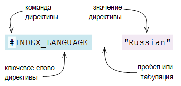

Директивы предварительной обработки

Общее описание
Синонимами к термину «директива предварительной обработки» являются выражения: директива препроцессора, команда препроцессора, англ. preprocessor directive, англ. preprocessor command.
Директива предварительной обработки – это команда к выполнению программы предварительной обработки данных до начала основного процесса обработки данных. Подобные программы называются препроцессорами и обычно используются при таких задачах, как компиляция. Одну компиляцию может предварять несколько разных препроцессоров. Во многих языках программирования при написании кода употребляются директивы препроцессора, например в C, Perl и других.
В словарях DSL директивы предварительной обработки всегда располагаются в самом начале (в первых строках) файлов основного текста и аббревиатур. В аннотациях возможно использование одной, необязательной директивы, которая может располагаться на любой строке файла, а не только на первой.
Директивы делятся на обязательные и необязательные. Обязательных директив всего три: #NAME, #INDEX_LANGUAGE и #CONTENTS_LANGUAGE. При отсутствии одной из них процесс компиляции словаря прервётся с сообщением об ошибке.
Директива в DSL состоит из ключевого слова и значения. Ключевое слово директивы всегда начинается со знака «решётки». Значение заключается в кавычки и отделяется от ключевого слова при помощи пробела (одного или нескольких) или табуляции (одной или нескольких).

Одна директива занимает одну, отдельную строку файла. Команда директивы (знак «решётки») должна располагаться в начале строки (на первой позиции). Наличие перед командой пробела, табуляции или любого другого символа приведёт к ошибке при компиляции.
Несколько директив, следующих друг за другом, составляют заголовочную часть словаря, т.н. «шапку». Между строками директив допускается наличие пустых строк (двух или более символов новой строки и/или перевода каретки подряд).
Порядок расположения директив в «шапке» относительно друг друга не имеет значения. Однако, при составлении словарей, рекомендуется соблюдать следующий порядок следования:
- На первом месте (строке) директива #NAME.
- На втором месте (строке) директива #INDEX_LANGUAGE.
- На третьем месте (строке) директива #CONTENTS_LANGUAGE.
- На следующих местах (строках) другие необязательные директивы.
Пример обязательной «шапки» :: Запись в DSL
#NAME "Словарь синонимов (Ru-Ru)" #INDEX_LANGUAGE "Russian" #CONTENTS_LANGUAGE "Russian" карточка [m1]фотография, снимок; визитка[/m]
Известно, что директивы использовались в словарях DSL, начиная с версии 6.0 (более ранние не проверялись). Первоначально существовали, причём недокументированно, всего лишь две директивы: #FULL_NAME и #LANGUAGE – первая содержала наименование словаря, а вторая – язык словарных заголовков. В версии 8.0 было введено в употребление основное большинство современных директив и правила их использования были освещены в официальном справочном руководстве.
Директива #NAME
Назначение: Указание «внутреннего» наименования словаря.
Использование: Только в файлах основного текста и аббревиатур.
Синтаксис: Обязательная директива. Должна располагаться в начале файла, в его первых строках.
Команда директивы # («решётка») должна располагаться в начале строки (на первой позиции). Наличие перед командой пробела, табуляции или любого другого символа приведёт к ошибке при компиляции.
Значение директивы: Значением является «внутреннее» наименование словаря. «Внутренним» оно называется потому, что используется для отображения в окнах словарной программы. В Lingvo это наименование отображается в верхней правой части словарной карточки (или в левой, если язык словаря – правосторонний) и во всех списках словарей. В силу характера использования это наименование должно быть по возможности лаконичным и выразительным для того, чтобы оно лучше воспринималось и умещалось в упомянутых местах. В конце названия рекомендуется указывать языковую пару словаря в скобках через дефис. В словарях от ABBYY, поставляемых вместе с Lingvo, пары языков обозначаются 2-буквенными сокращениями, согласно стандарту ISO-639-1. «Соглашение» лексикографов в данном случае рекомендует использовать 3-буквенные сокращения, по стандарту ISO-639-3 (или ISO-639-2).
Пример директивы #NAME :: Запись в DSL
#NAME "Синонимы и антонимы (Ru-Ru)"
| Рекомендуемая форма наименований | Нерекомендуемая форма наименований |
|---|---|
| Малый академический словарь (Ru-Ru) | Малый академический словарь русского языка |
| Греческие пословицы и поговорки (El-Ru) | Новогреческо-русский словарь греческих пословиц и поговорок с подбором аналогов в русском языке (El-Ru) |
| Marketing (En-Ru) | The New English-Russian Dictionary of Marketing and Commerce |
История: Директива введена в употребление в Lingvo версии 8.0.
Директива #INDEX_LANGUAGE
Назначение: Указание языка заголовков словаря.
Использование: Только в файлах основного текста и аббревиатур.
Синтаксис: Обязательная директива. Должна располагаться в начале файла, в его первых строках.
Команда директивы # («решётка») должна располагаться в начале строки (на первой позиции). Наличие перед командой пробела, табуляции или любого другого символа приведёт к ошибке при компиляции.
Значение директивы: Значением является английское наименование языка согласно стандарту ISO-639-2. Могут быть использованы только языки, поддерживаемые в Lingvo (см. Список поддерживаемых языков). Значение чувствительно к регистру символов и должно указываться в точности так, как оно приводится в ISO-639-2. Так, например, форма "English" является правильной, а "english" и "ENGLISH" вызовут ошибку при компиляции.
Пример директивы языка заголовков :: Запись в DSL
#INDEX_LANGUAGE "English"
Особенности: Если в значении указать неподдерживаемый в Lingvo язык, то компиляция словаря прервётся с сообщением об ошибке.
Если фактический язык заголовков не соответствует языку, указанному в директиве, то это повлияет на некоторые возможности программы Lingvo. Подробнее об этом см. в главе о тэге языковой разметки.
История: Директива введена в употребление в Lingvo версии 8.0.
Директива #CONTENTS_LANGUAGE
Назначение: Указание языка переводной / толковательной части словаря.
Использование: Только в файлах основного текста и аббревиатур.
Синтаксис: Обязательная директива. Должна располагаться в начале файла, в его первых строках.
Команда директивы («решётка») должна располагаться в начале строки (на первой позиции). Наличие перед командой пробела, табуляции или любого другого символа приведёт к ошибке при компиляции.
Значение директивы: Значением является английское наименование языка согласно стандарту ISO-639-2. Могут быть использованы только языки, поддерживаемые в Lingvo (см. Список поддерживаемых языков). Значение чувствительно к регистру символов и должно указываться в точности так, как оно приводится в ISO-639-2. Так, например, форма "English" является правильной, а "english" и "ENGLISH" вызовут ошибку при компиляции.
Пример директивы языка переводов :: Запись в DSL
#CONTENTS_LANGUAGE "Russian"
Особенности: Если в значении указать неподдерживаемый в Lingvo язык, то компиляция словаря прервётся с сообщением об ошибке.
Если фактический язык переводов не соответствует языку, указанному в директиве, то это повлияет на такие возможности программы Lingvo, как поиск, показ грамматических форм слов и другие. Подробнее об этом см. в главе о тэге языковой разметки.
История: Директива введена в употребление в Lingvo версии 8.0.
Директива #SOURCE_CODE_PAGE
Назначение: Указание имени кодовой страницы.
Использование: Только в файлах основного текста и аббревиатур. Только в случаях, когда файл словаря сохранён в кодировке ANSI.
Синтаксис: Необязательная директива. Должна располагаться в начале файла, в его первых строках.
Команда директивы # («решётка») должна располагаться в начале строки (на первой позиции). Наличие перед командой пробела, табуляции или любого другого символа приведёт к ошибке при компиляции.
Значение директивы: Значением является специальное наименование кодовой страницы в Windows. Могут быть использованы только наименования, поддерживаемые в Lingvo (см. главу «Кодовые страницы ANSI в Windows»). Значение чувствительно к регистру символов и должно указываться в точности так, как оно приводится в указанном списке. Так, например, форма "English" является правильной, а "english" и "ENGLISH" вызовут ошибку при компиляции.
Пример директивы кодовой страницы :: Запись в DSL
#SOURCE_CODE_PAGE "EasternEuropean"
Замечания: Если файл словаря сохранён в кодировке Unicode (UTF-16 LE), то использование директивы (т.е. дополнительное определение кодовой страницы) не требуется. В этом случае компилятор проигнорирует значение директивы.
При сохранении файла словаря в кодировке ANSI важно учесть, что язык заголовков и язык перевода / толкований должны принадлежать одной кодовой странице. Если это не так, файл должен быть сохранен в кодировке Unicode. Соответствия языков и их кодовых страниц см. в таблице Коды локалей Microsoft.
История: Директива введена в употребление в Lingvo версии 8.0.
Директива #INCLUDE
Назначение: Добавление дополнительных файлов с текстом словаря.
Использование: Только в файлах основного текста.
Синтаксис: Необязательная директива. Должна располагаться в начале файла, в его первых строках.
Команда директивы # («решётка») должна располагаться в начале строки (на первой позиции). Наличие перед командой пробела, табуляции или любого другого символа приведёт к ошибке при компиляции.
Обратную косую черту, используемую в значении директивы (в пути к файлу), необходимо удваивать: \\.
Значение директивы: Значением является путь к дополнительному файлу с текстом словаря. Пути могут быть абсолютными и относительными.
Указание абсолютного пути :: Запись в DSL
#INCLUDE "c:\\Lingvo\\Dictionaries\\rus-rus_synonyms-2.dsl"
Дополнительный файл в одной папке с исходным :: Запись в DSL
#INCLUDE "rus-rus_synonyms-2.dsl"
Дополнительный файл в подпапке рядом с исходным :: Запись в DSL
#INCLUDE "Extra\\rus-rus_synonyms-2.dsl"
Дополнительный файл папкой выше от исходного :: Запись в DSL
#INCLUDE "..\\Thesaurus\\rus-rus_synonyms-2.dsl"
Замечание: Директива обрабатывается следующим образом. Во время компиляции основного файла словаря, его содержимое объединяется с содержимым дополнительного файла и записывается в результирующий файл *.lsd.
История: Первое упоминание об употреблении этой директивы встречается в официальном справочном руководстве к Lingvo версии 9.0.
Директива #ICON_FILE
Назначение: Указание местонахождения файла иконки для словаря.
Использование: Только в файлах основного текста.
Синтаксис: Необязательная директива. Должна располагаться в начале файла, в его первых строках.
Команда директивы # («решётка») должна располагаться в начале строки (на первой позиции). Наличие перед командой пробела, табуляции или любого другого символа приведёт к ошибке при компиляции.
Обратную косую черту, используемую в значении директивы (в пути к файлу), необходимо удваивать: \\.
Значение директивы: Значением является путь к файлу иконки. Пути могут быть абсолютными и относительными. Примеры путей см. выше в главе «Директива #INCLUDE».
История: Директива появилась в системных словарях Lingvo, начиная с версий x5 (15.0).
Директива #LANGUAGE
Назначение: Языковая разметка словарных аннотаций.
Использование: Только в файлах аннотаций *.ann.
Синтаксис: Необязательная директива. Может располагаться на любой строке файла, а не только на первой.
Команда директивы # («решётка») должна располагаться в начале строки (на первой позиции). Наличие перед командой пробела, табуляции или любого другого символа приведёт к ошибке при компиляции.
Значение директивы: Значением является полное английское наименование языка по стандарту ISO-639-2. Значение чувствительно к регистру символов и должно указываться в точности так, как оно приводится в ISO-639-2. Так, например, форма "English" является правильной, а "english" и "ENGLISH" вызовут ошибку при компиляции.
Общее описание: Директива условно делит аннотацию на части. Одной частью считается фрагмент текста от одной строки с директивой до другой строки с директивой или до конца файла. Каждой части присваивается язык, указанный в значении её директивы.
Употребление директив #LANGUAGE :: Запись в ANN
#LANGUAGE "Russian" LatinAmerican (Es-Ru) (к версии ABBYY Lingvo x5) Испанско-русский словарь. Латинская Америка. © «Русский язык-Медиа», 2004, Фирсова Н.М. 50 тыс. слов и словосочетаний. #LANGUAGE "English" LatinAmerican (Es-Ru) (for ABBYY Lingvo x5) The Spanish-Russian Dictionary of Latin America. © Russkiy Yazyk - Media, 2004, N.M. Firsova. 50,000 words and phrases. #LANGUAGE "Ukrainian" LatinAmerican (Es-Ru) (до версії ABBYY Lingvo x5) Іспансько-російський словник. Латинська Америка. © «Русский язык-Медиа», 2004, Фірсова Н.М. 50 тис. слів і словосполучень.
В зависимости от языка интерфейса, выбранного в настройках программы, в окне аннотации будет отображаться соответствующая языковая часть, а части других языков будут скрыты. Выбор языков для употребления в значениях директивы ограничен набором языков интерфейса конкретной версии Lingvo. Например, в Lingvo x6 доступны шесть языков (хотя соответствующие языки интерфейса есть только у первых четырёх, а два последних просто включены в аннотации всех системных словарей):
| Английский | English |
| Русский | Russian |
| Украинский | Ukrainian |
| Казахский | Kazakh |
| Немецкий | German |
| Французский | French |
В Lingvo x5 был доступен ещё Испанский (SpanishTraditionalSort).
Если в аннотации отсутствует одна из возможных языковых частей, то, при выборе в Lingvo интерфейса этого языка, будет отображена часть на английском языке.
Замечание: Программа GoldenDict не поддерживает обработку данной директивы.
История: В версиях Lingvo 6.0 и 7.0 эта директива использовалась в файле основного текста и её значением было указание на язык словарных заголовков. В версии 8.0 состав директив был переработан и употребление #LANGUAGE было отвергнуто. Позднее директива перекочевала в файл аннотации. Первое упоминание о ней в контексте создания аннотаций встречается в официальном справочном руководстве к Lingvo версии 12.0.